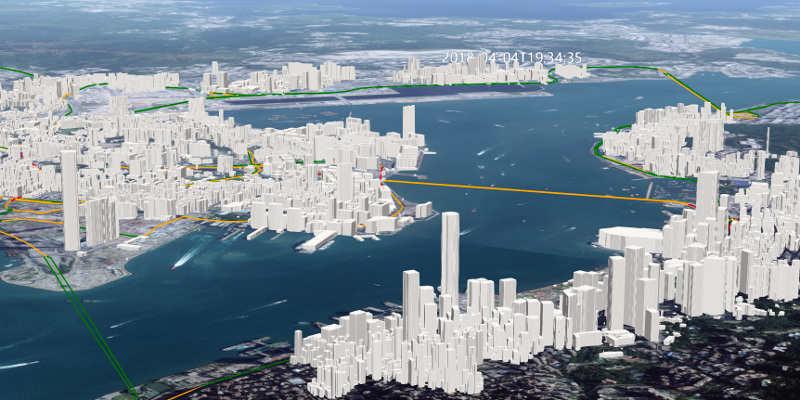
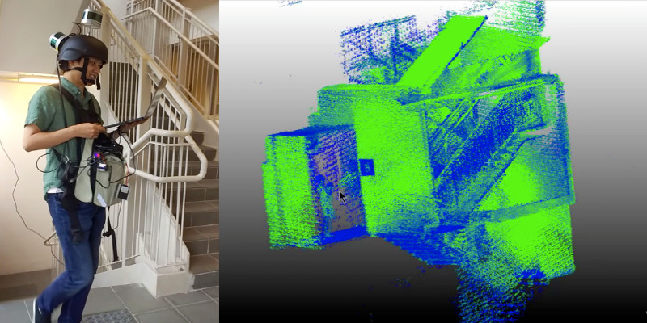
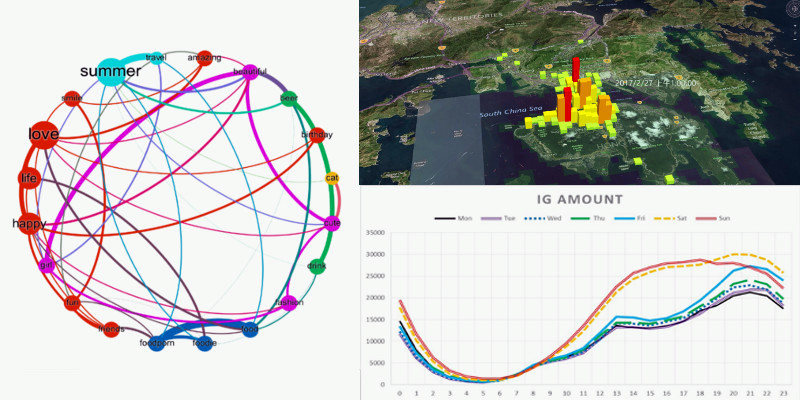

Missions of Laboratory
Developing key technologies for Smart City, including spatial big data analytics and modelling, smart navigation and mobility, and urban sensing and computing
Proposing smart city solutions for Hong Kong and Greater Bay Area, covering the areas smart mobility, smart environment, smart people, and smart governance
Providing consultancy support to Hong Kong SAR Government on strategy and policy on Smart City development
Words from Director
tbc

Spatial Data Infrastructure for Smart City
Spatial data infrastructure is a key foundation for smart city development. Our laboratory has launched a spatial data infrastructure platform covering the whole Hong Kong area. Our platform initially integrated outdoor, indoor, above-ground, underground and spatiotemporal dynamic models.

Lightweight Seamless 3D Indoor Mapping and Post-processing
Our research aim is to develop a lightweight seamless 3D spatial data acquisition system as well as a 3D spatial data post-processing software toolkit.
Remote sensing is the technique to detect information about an object or phenomenon without making physical contact with the object. We have conducted extensive research in remote sensing, with emphases on change detection and object extraction.

Urban Spatiotemporal Big Data Analytics
We innovate and utilize emerging analytics on various spatiotemporal big data (e.g. location-based social network data, GPS-associated document, WIFI data) for modelling, analysis and mining. Our team devotes to improving reliability of the analytics and applying the knowledge to real-world scenarios.
Research Facilities
Territory-wide 3D Geo-Database Framework
Spatial Big Data Analytics Server
Smart City 3D Analytics and Visualization System
Virtual Reality Visualization Platform
Laboratory for Smart City and Spatial Big Data Analytics
ZN607, Block Z
Department of Land Surveying and Geo-Informatics
The Hong Kong Polytechnic University
Director of Laboratory: Prof. SHI Wen-zhong John
Email:lswzshi@polyu.edu.hk